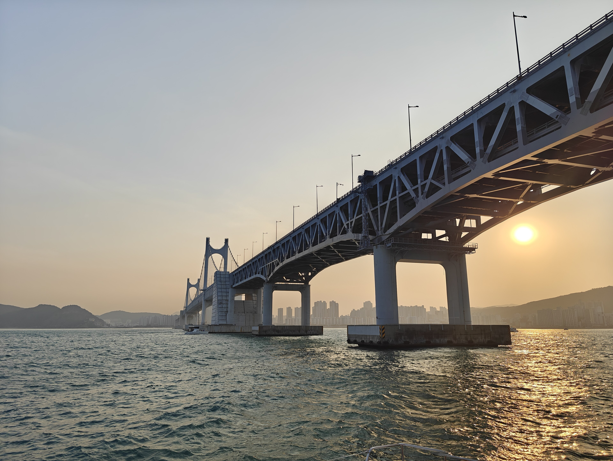

Where are you
going in Korea?
Find your way, discover a detour, and make the most of the places in between.
Get to know BusanLet the map lead you.
Choose a city. Find a neighbourhood. Make it your next stop.
A different side of Korea.
The little things that make a big difference.
Practical answers to the questions that come up on a first trip.
Start with the essentialsEntry requirements
Visas, K-ETA and arrival documents.
Airport transfers
Your first journey, made easier.
SIM & eSIM
Stay connected from day one.
Transit cards
One card for everyday journeys.
Money & payments
Know when to tap, and when to carry cash.
Luggage storage
Leave your bags. Keep the day.
A bit of reading. A better trip.
 BUSAN · PLACES TO GO
BUSAN · PLACES TO GOFrom Haeundae Beach to Gamcheon Culture Village
A starting point for exploring Busan’s coast and colourful streets.
Read the guide GETTING AROUND
GETTING AROUNDTrain or intercity bus?
Understand your options before you head to the next city.
Read the guide JEJU · ISLAND TRAVEL
JEJU · ISLAND TRAVELMake a little room for Jeju.
Start planning your time on Korea’s volcanic island.
Read the guideA local starting point.
Land in Korea is an independent collection of travel guides for visitors. We bring destinations and the practical details together, so you can spend less time figuring things out and more time exploring.
About Land in Korea